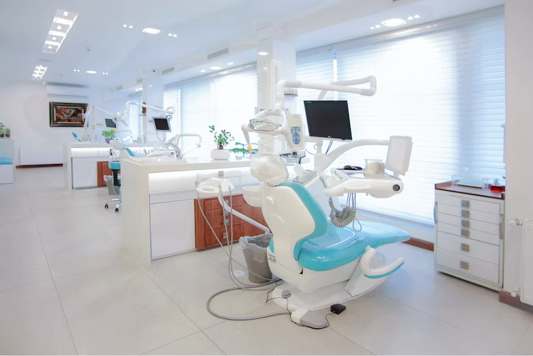
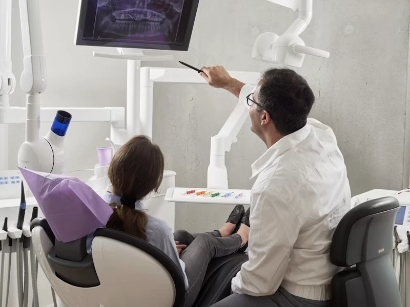

How we got here
Twelve years, one quiet promise.
-
2012
Stackly opens its doors
One converted bookbinder's studio, one chair, and a promise scrawled on the intake form: no rushed appointments, ever.
-
2015

The studio expands
A second treatment room and our first dedicated hygiene team, so cleanings never had to compete with same-day emergencies.
-
2018
Molds retired for good
Digital intraoral scanning replaces the last of our impression trays — faster, and far more comfortable for anxious patients.
-
2021
Same-week care begins
We commit publicly to seeing every new patient within a week — and have kept that promise in every quarter since.
-
Today

14,200 smiles, and counting
Still the same unhurried pace we started with — just with a few more hands, and a lot more practice.